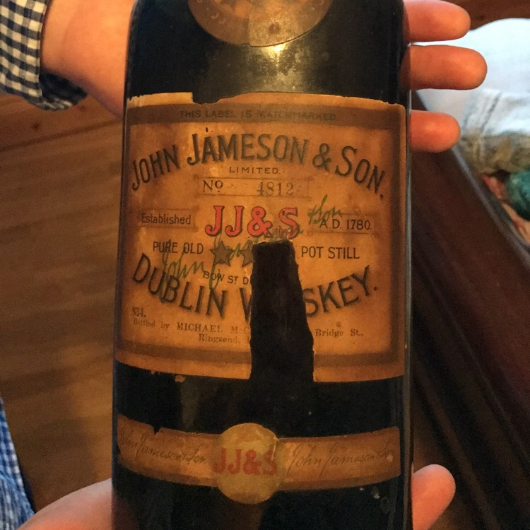

NOTE: This forum is no longer active. This is an archive copy of the forum as it was on 10 March 2018.
Very old whiskey find
4 posts
• Page 1 of 1
Very old whiskey find
 by Mnuke33 » Sun Jun 11, 2017 7:52 pm
by Mnuke33 » Sun Jun 11, 2017 7:52 pm
Hi guys, I have stumbled across what looks to be like a very old bottle of whiskey, this bottle came from an old pub in Ireland. Can anyone help me with what it might be worth
- Attachments
-
- 
- IMG_0737.JPG (144.41 KiB) Viewed 518 times
- Mnuke33
- New Spirit
- Posts: 1
- Joined: Sun Jun 11, 2017 7:44 pm
Re: Very old whiskey find
 by Good Whiskey Hunting » Mon Jun 12, 2017 12:01 pm
by Good Whiskey Hunting » Mon Jun 12, 2017 12:01 pm
Great find. What does the capsule look like? Is the seal intact?
Four blessings upon you - Older whiskey - Younger women - Faster horses - More money
https://twitter.com/potstillwhiskey
https://facebook.com/potstillwhiskey/
https://www.instagram.com/potstillwhiskey/
https://twitter.com/potstillwhiskey
https://facebook.com/potstillwhiskey/
https://www.instagram.com/potstillwhiskey/
-

Good Whiskey Hunting - Fully mature Cask
- Posts: 1832
- Joined: Tue Dec 01, 2009 11:43 pm
- Location: Wexford
Re: Very old whiskey find
 by IrishWhiskeyChaser » Tue Jun 13, 2017 6:50 pm
by IrishWhiskeyChaser » Tue Jun 13, 2017 6:50 pm
Well the fact it has green glass may well mean it is not as old as you may think so not very very old  .
.
These labels were in use up to the 60's and the fact it is from a pub would explain the old stained look. Tobacco smoke etc
However very hard to gauge by the picture you have submitted as we'd need to see the whole bottle.
It does look bigger than a normal bottle though which could add value but may just be the picture.
Does it still have the contents? An empty bottle will not be worth much unfortunately.
These labels were in use up to the 60's and the fact it is from a pub would explain the old stained look. Tobacco smoke etc
However very hard to gauge by the picture you have submitted as we'd need to see the whole bottle.
It does look bigger than a normal bottle though which could add value but may just be the picture.
Does it still have the contents? An empty bottle will not be worth much unfortunately.
Sláinte Adrian
- IrishWhiskeyChaser
- Site Admin
- Posts: 2910
- Joined: Tue Mar 17, 2009 1:37 pm
- Location: A Dark Dunnage somewhere in Galway
Re: Very old whiskey find
 by wchurst » Thu Nov 02, 2017 3:31 am
by wchurst » Thu Nov 02, 2017 3:31 am
Mnuke33 - Hello there!
A few months ago you posted here about an older bottle of Jameson found in an old pub,
and I see that you did not receive much in the way of answers to your questions on this...
I was very interested in researching this for you... Do you still have this bottle, and could I
ask you to add a few clear photos of the Cap & content levels ?!? (The best photos will need
to be taken with the bottle in a standing position, and with a bit of back-light behind the
dark glass...Perhaps if the photo could be taken from a window sill?)
From my preliminary research into your bottle, I do believe this was produced before the
1930s based on the style of the neck label... (Pre-1930's bottles bear a neck label showing
3 large stars, and no "JJ&S" in the center of the neck label).
The inclusion of the "boxed" Serial # (4812) leads me to also believe that this was produced
after WWI, and sometime in the 1920's...There are very few examples of labels bearing these
'boxed' Serial #s, but all of them are found on bottles that were filled by local retailers with
labels from provided them by JJ&S. (Note that none of these bottles were filled by JJ&S or
the Bow Street distillery.)
Or the examples I have on file, Serial # 1001 was identified by an auction house as being from
1919, and Serial # 14731 is the highest recorded serial number I have on file... As to date, I've
found no known examples of this 'local bottling label' that can be identified to 1930 or later.
I will look forward to hearing from you, and helping you with researching your bottle!
Cheers,
Walter C Hurst
A few months ago you posted here about an older bottle of Jameson found in an old pub,
and I see that you did not receive much in the way of answers to your questions on this...
I was very interested in researching this for you... Do you still have this bottle, and could I
ask you to add a few clear photos of the Cap & content levels ?!? (The best photos will need
to be taken with the bottle in a standing position, and with a bit of back-light behind the
dark glass...Perhaps if the photo could be taken from a window sill?)
From my preliminary research into your bottle, I do believe this was produced before the
1930s based on the style of the neck label... (Pre-1930's bottles bear a neck label showing
3 large stars, and no "JJ&S" in the center of the neck label).
The inclusion of the "boxed" Serial # (4812) leads me to also believe that this was produced
after WWI, and sometime in the 1920's...There are very few examples of labels bearing these
'boxed' Serial #s, but all of them are found on bottles that were filled by local retailers with
labels from provided them by JJ&S. (Note that none of these bottles were filled by JJ&S or
the Bow Street distillery.)
Or the examples I have on file, Serial # 1001 was identified by an auction house as being from
1919, and Serial # 14731 is the highest recorded serial number I have on file... As to date, I've
found no known examples of this 'local bottling label' that can be identified to 1930 or later.
I will look forward to hearing from you, and helping you with researching your bottle!
Cheers,
Walter C Hurst
- wchurst
- New Spirit
- Posts: 3
- Joined: Wed Nov 01, 2017 5:16 am
4 posts
• Page 1 of 1